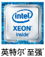
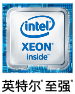

你的“旧”刀片，“钝了”吗？
-
设备老旧 24
老刀片服务器使用时间过长
超过产品生命周期
急需升级换代 -
无法满足应用需求
老刀片服务器处理能力和IO带宽
均不能满足面向虚拟化和
云等新兴应用类型的需要 -

维护困难
老刀片服务器扩展困难，
维修选件缺失，维护难度大、
成本高昂 -
处置隐患
废旧IT资产处置不当
带来数据丢失和泄密风险回收机构若处置不当
造成环境污染、企业声誉受损
领先的联想新一代Flex刀片服务器，给你更快的“新刀”
融合架构 灵动快捷高效节能 降低成本
-
Flex System采用全新一代
融合刀片架构，帮助用户
提高业务灵活性，更快产
生业务价值 -
可满足用户未来十年
IT技术发展和新型应用
需求，帮助用户从容迈
向大数据分析和云计算 -
以高性能和高密度，
帮助用户改善效率并
减少复杂度 -
降低采购和运营成本，
让用户更快的获得
投资回报
靠谱的联想IT资产回收服务，让你放心
-
安全
提供原厂上门数据安全服务，可靠的信息安全资质与超过十年的丰富经验
可选有偿服务：硬盘现场拆除不返还、打孔、数据消磁、数据迁移服务
-
专业
健全完善、标准化的旧机残值估价体系，帮助企业降低IT成本支出
国内资质和国际认证：质量管理体系9001、安全体系14001
-
环保
严格遵守国家环保法规要求，一站式回收服务，避免污染
符合环保3R原则，降低碳排放，提供联想IT资产回收公益证明
-
便捷
专线电话预约原厂上门回收服务，并提供现场资产清点、专业物流运输服务
提供专职项目经理全程项目管理服务
本活动最终解释权归联想所有

联想Flex System服务器采用英特尔®至强®处理器
英特尔®，让效能更强劲！
立即了解更多，请致电联系销售代表 
英特尔®，让效能更强劲！
立即了解更多，请致电联系销售代表 
极本,赛扬、Celeron Inside、Core Inside、英特尔、英特尔标识、英特尔凌动、Intel Atom Inside、英特尔酷睿、Intel Inside, Intel Inside 标识、英特尔欢跃、英特 尔博锐、安腾、Itanium Inside、奔腾、Pentium Inside、vPro Inside、至强 、至强Phi和Xeon Inside均是英特尔公司在美国或其他国家的商标。
2016 © Creative Inc. All rights reserved.